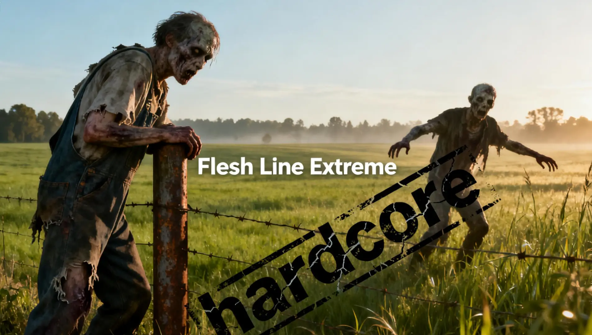
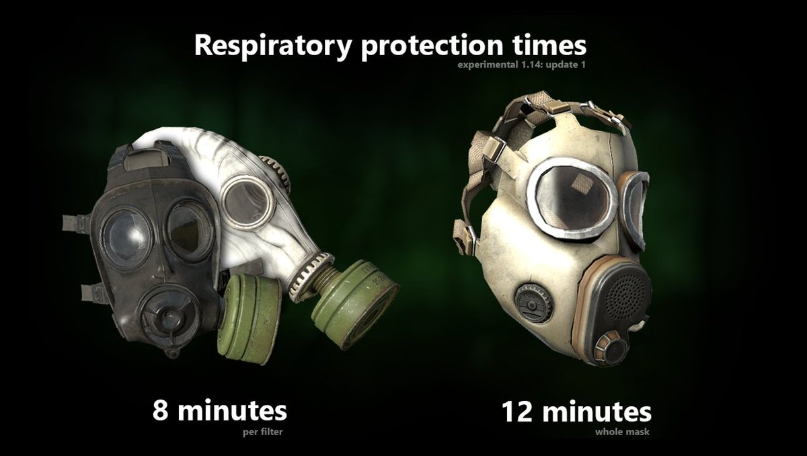
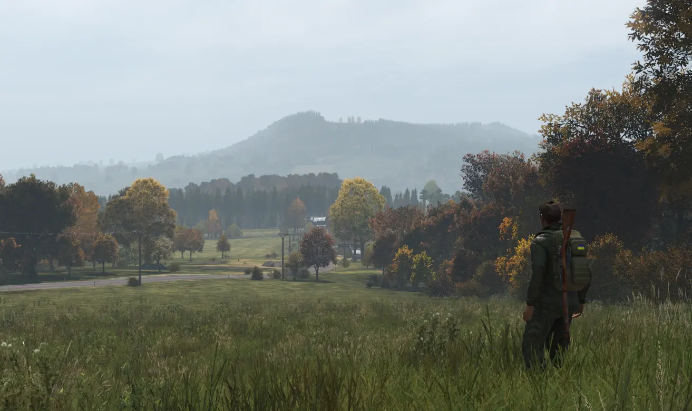
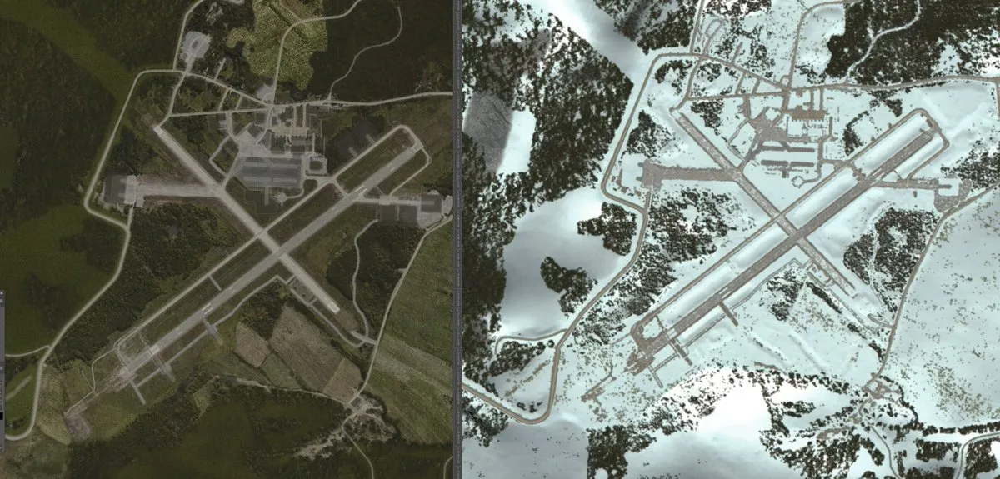
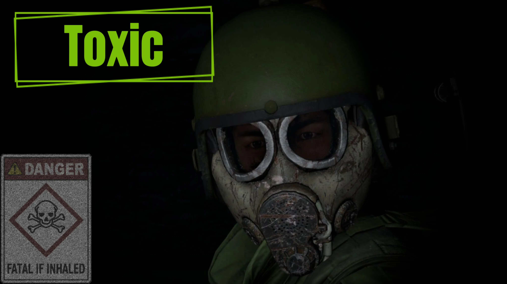
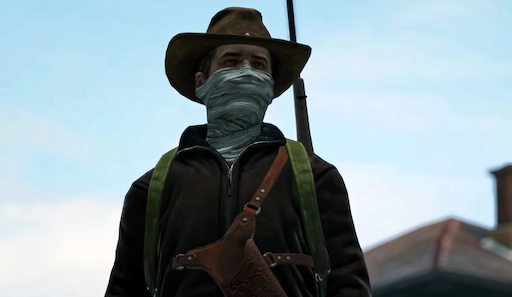

Everyone will spawn in at the island of Skalisty. Skalisty spans 1,340 meters point to point and has one working
water pump. You will still receive a fruit, a glowstick, and a disinfected bandage. The island offers one
large castle. Choose wisely from the seven pillars of sanctuary; seven distinct buildings stand ready to become
your fortress. Remember, depending on the time of year that you spawned in, this could either be extremely
difficult or just harder than most other times. With PVP enabled and food as an immediate problem, you will
have to decide what takes precedence. Make for land, or stay and wait another survivor?
Surviving Dayz



While on official DayZ servers, Chernarus, Elektra, and Berezino are the go-to spots to get food and immediate
weapons on the map. On the dayz server Flesh Line Extreme, the hordes in these cities can quickly become real big. As the hordes grew
bigger, the food grew scarcer. Infected tried to rush the shoreline to escape the gas zones and other infected,
but once that was everyone's plan, it just became one big cesspool. Weapons can be found immediately if you can
survive the hordes in these cities. Don't look too hard for food in these spots, as the majority of the
infected caused all of the food to rot or decay.
Dayz Military Base



Dayz military locations are the only place that parishable food will be.
North West Airfield in this DayZ journey will be everyones go to. Not just for the weapons but mainly for the food.
This is where you will be able to see weekly shipments of food(Roughly every 3 real life days). while a cool dayz summer and spring
will make eating difficult but possible, Dayz Winter will begin to make eating on your own almost impossible. Location is everything
on this chernarus map. So do you make runs to the airfield during the
summer and spring to stockpile and save for the winter? Or do you wait, live off of the
land by Hunting and Fishing? The decision is for you to make on this
dayz standalone pvp server.